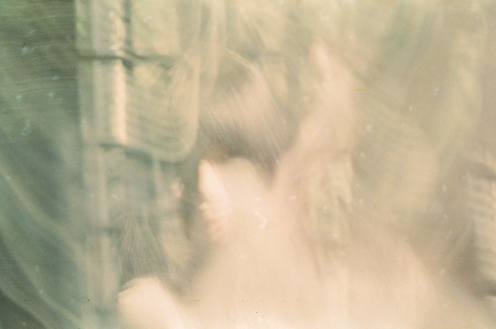

Rê chuột vào một chữ để chữ hóa nước. Bấm "hồ", "phá" hoặc "thơ" để vào phòng. Trên điện thoại: chạm một lần, chữ hóa nước, gợn một nhịp rồi vào phòng.
Mở một bài để chỉnh giãn dòng riêng cho bài đó.
Bấm khung ở giữa để mở bài. Cuối bài, bấm vào ảnh để về cuộn phim. Nền bài thơ là ảnh của bài làm nhòe, phủ một lớp tối và hạt phim; ảnh càng sáng thì lớp tối càng dày để chữ vẫn dễ đọc. Sau này mỗi bài có thiết kế riêng.